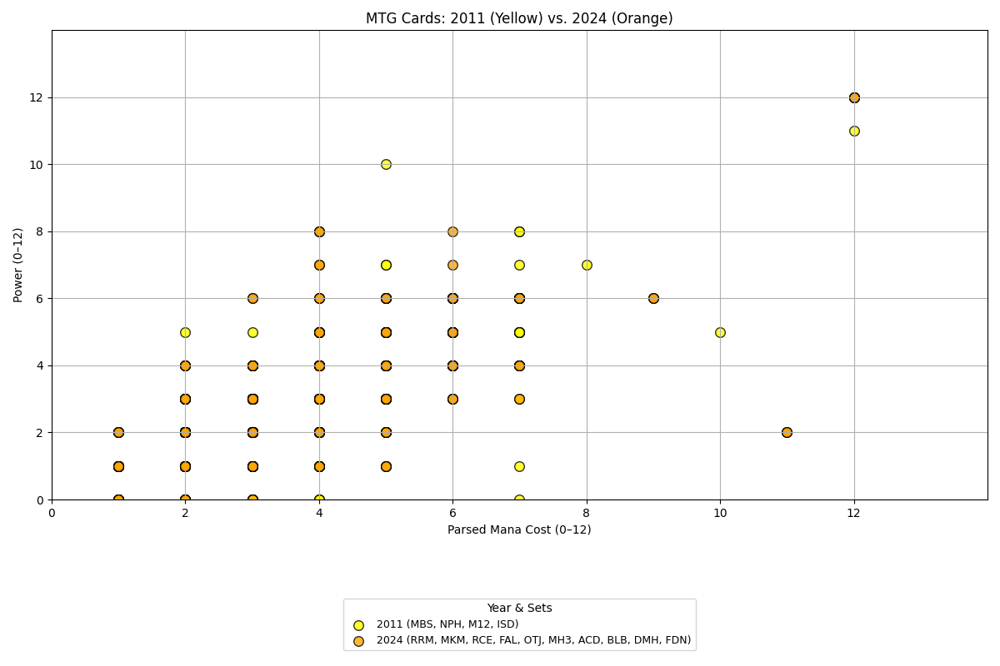

Commander Data Analysis: 2011 vs. 2024
Understanding the Evolution of Magic: The Gathering
1/29/2025 - Happy Birthday to me! 🎉
Magic: The Gathering has evolved significantly over the years, and with the release of the 2024 Aetherdrift Commander set, it's time to compare it with the classic 2011 Commander deck.
Objective
Our goal in this project is to analyze the differences between the 2011 Commander and 2024 Aetherdrift Commander sets. We'll examine trends in card types, mana costs, strategies, and deck power levels to understand how the game has shifted over the years.
Data Selection
The dataset consists of two Commander sets:
- 2011 Commander: A classic set known for its balanced strategies.
- 2024 Aetherdrift Commander: The latest evolution in the game, incorporating modern mechanics.
Project Dataset and Overview
For Project 1, I will be focusing on old Magic: The Gathering compared to new. When selecting my project, I decided to focus on something I am passionate about to help me enjoy the project and put more effort into it. This link contains every single card set that Magic: The Gathering has ever created. I plan to focus on a specific format that started in 2011 known as Commander. In this format rules are differnt for MTG and I will take the 2011 dataset and compare it to the 2024 dataset to visualize possible power creep within creatures. The first dataset contains 320 cards and the second contains 400. The data is divided up by card type, rarity, element, and mana cost.
Key Questions
- Has the average power and toughness of creatures increased from 2011 to 2024?
- Has the mana curve shifted? Are newer creatures more cost-efficient than older ones?
- Which colors have seen the most improvement in mechanics and abilities over time?
- Are legendary creatures becoming stronger to fit modern deck-building strategies?
- How has the balance of card types changed between the two sets?
- Is it more fun with fancier card effects (personal opinions after research)?
Potential Benefits
- Understanding Power Creep: My data will help players and game designers assess whether power creep is occurring.
- Deck-Building Insights: Identifies trends in creature efficiency that could impact how Commander decks are built.
- Historic Comparison: What did Magic start out as? What has it become today? Is it more fun? Are card effects more fair and balanced? This data will provide insights into Magic's evolution and its future relevance.
Potential Harms
- Bias Toward Newer Cards: Just because new creatures have better abilities on paper doesn't mean they will be stronger in the actual game.
- Market Influence: Highlighting power creep may cause older Commander staples to drop in value and raise demand for newer cards. This could benefit Wizards of the Coast as sales continue to grow the company.
Possible Missing Aspects
Since I am only comparing the first Commander sets and the newest Commander sets, the data may not accurately reflect power creep across all years. There may be a specific year that stands out among the data sets that I am skipping. I may further expand this project in the future to involve all Commander data sets.
2011 vs. 2024 Commander Data

Key Insights
- Creatures in 2024 have a higher average power and toughness, indicating a shift in overall game balance.
- The mana cost of creatures has decreased slightly, suggesting newer cards are more cost-efficient.
- There may be an increase in complex mechanics and interactions in newer sets.
Conclusion
This analysis provides a fascinating look at the evolution of Commander from 2011 to 2024. With new mechanics, power scaling, and gameplay philosophies, we can see how Magic: The Gathering continues to innovate and challenge players.
Stay tuned for more visualizations and insights! And once again, Happy Birthday to me! 🎂